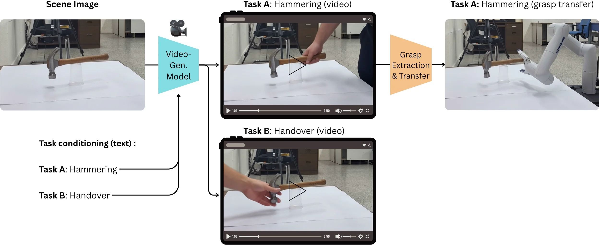
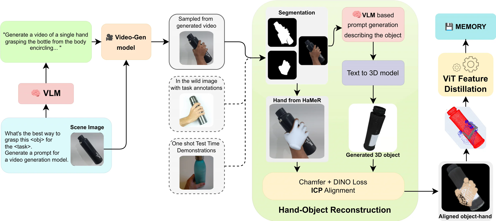
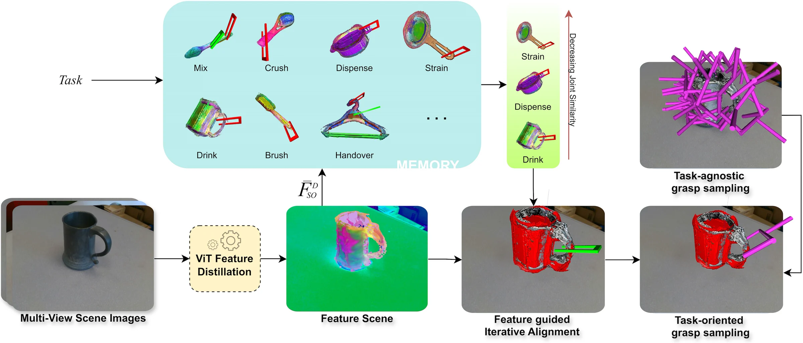
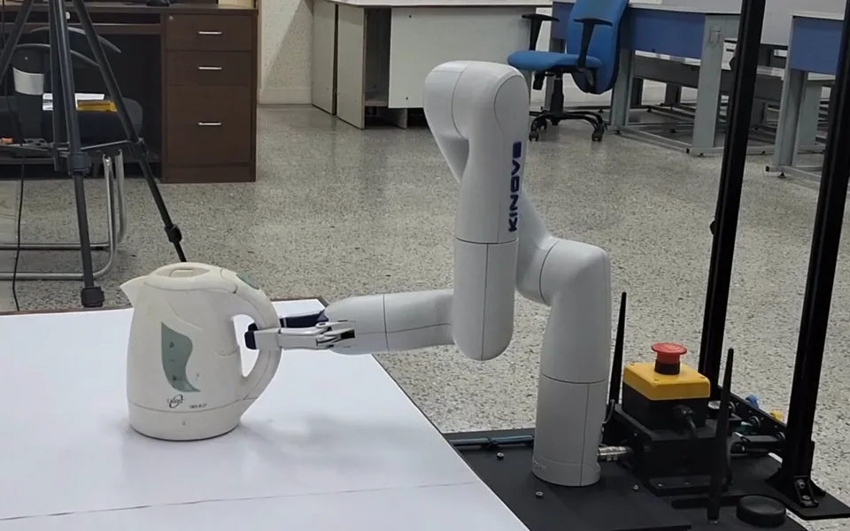
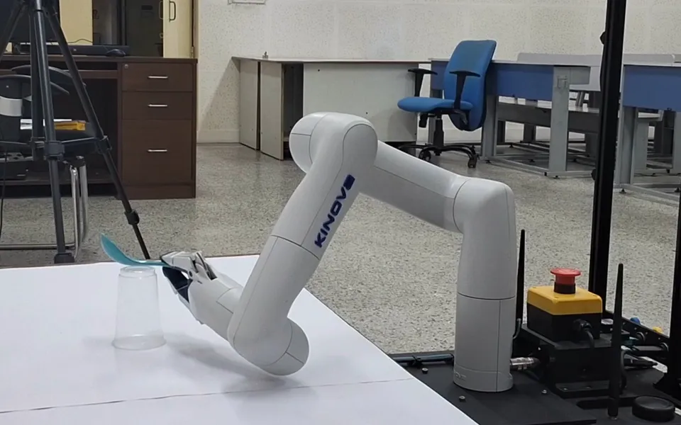
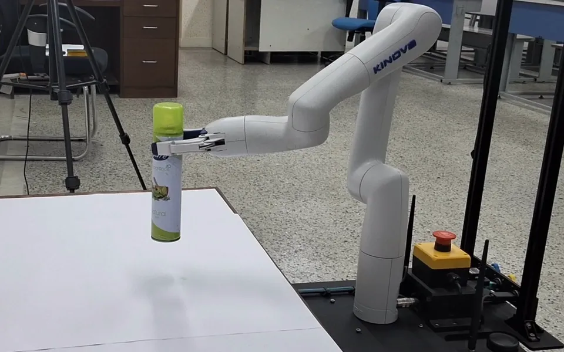
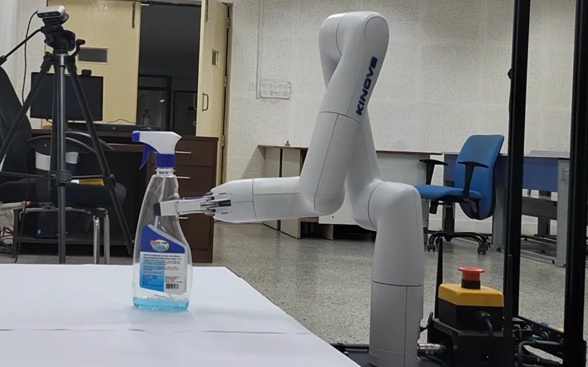

Abstract
Grasp the object the way the task needs it.
Task-Oriented Grasping (TOG) is a challenging problem that requires an understanding of task semantics, object affordances, and the functional aspects of how an object should be held for a purpose. To address these challenges, we introduce GRIM (Grasp Re-alignment via Iterative Matching), a novel training-free framework for task-oriented grasping. Initially, a coarse alignment strategy is developed using a combination of geometric cues and the scoring of PCA-reduced DINO features. Subsequently, the full grasp pose associated with the retrieved memory instance is transferred to the aligned scene object and further refined against a set of task-agnostic, geometrically stable grasps generated for the scene object, prioritizing task compatibility. Compared to previous training-based methods, our approach is able to achieve high generalization with a few conditioning examples.
Video
See GRIM in action.
Approach
Two phases: build a memory, then retrieve, align and transfer.



Real world
Real-world deployment with novel objects.
The system correctly plans and executes task-oriented grasps. The Kinova Gen3 Lite robot successfully executing the planned grasp.




Generative examples
Veo 2: generated synthetic videos for grasp estimation.
We use Veo 2 to generate 5-second and 8-second, object-centered videos depicting human hand interactions for grasp pose estimation. Given an object image and name from the TaskGrasp dataset [Murali et al., 2020b], Veo 2 generates a detailed grasp description tailored to a specific task. This is used to prompt the Veo 2 video generation model, which produces consistent, realistic grasping videos. We extract the middle frame—where the grasp is clearest—for downstream use. This approach enables scalable, high-quality data generation for learning task-conditioned grasps.
Interactive 3D
Hand-object reconstruction.
Drag to orbit, scroll to zoom. The gripper pose is computed from the reconstructed hand.
Interactive 3D
Feature-guided alignment.
The retrieved memory object (red) aligned onto the scene object (grey) using DINOv2 features. Pick an example below.
Citation
BibTeX
@article{Shailesh_Raj_Kumar_Shukla_Melnik_Beetz_Nandi_2026,
title={GRIM: Task-Oriented Grasping with Conditioning on Generative Examples},
volume={40},
url={https://ojs.aaai.org/index.php/AAAI/article/view/38873},
DOI={10.1609/aaai.v40i22.38873},
number={22},
journal={Proceedings of the AAAI Conference on Artificial Intelligence},
author={Shailesh, Shailesh and Raj, Alok and Kumar, Nayan and Shukla, Priya and Melnik, Andrew and Beetz, Michael and Nandi, Gora Chand},
year={2026},
month={Mar.},
pages={18118–18125}
}